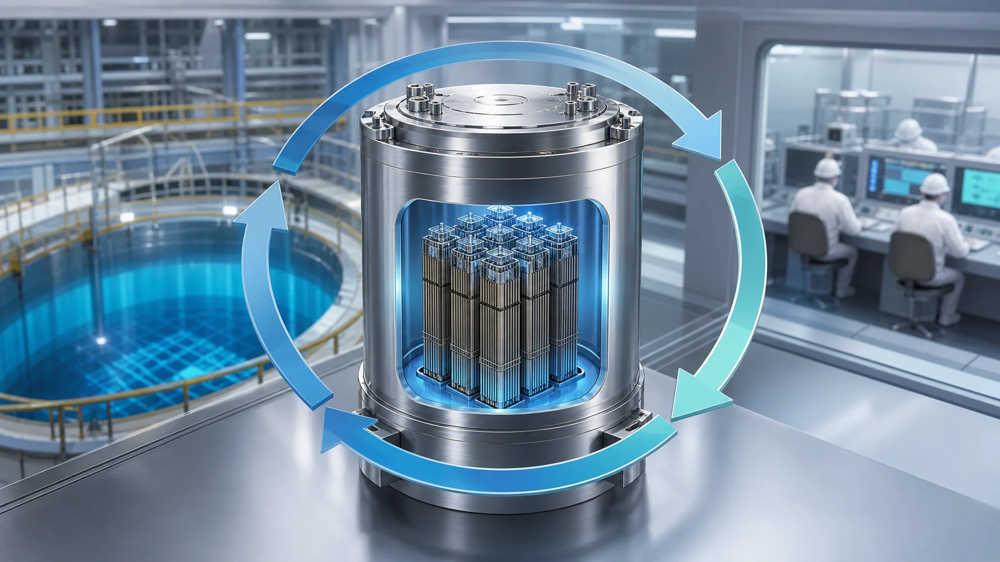
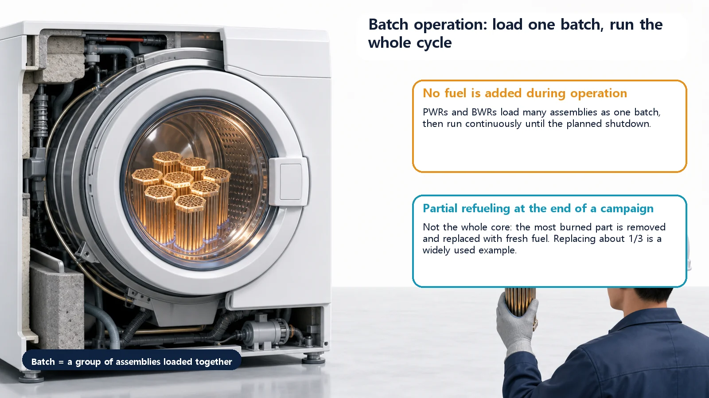
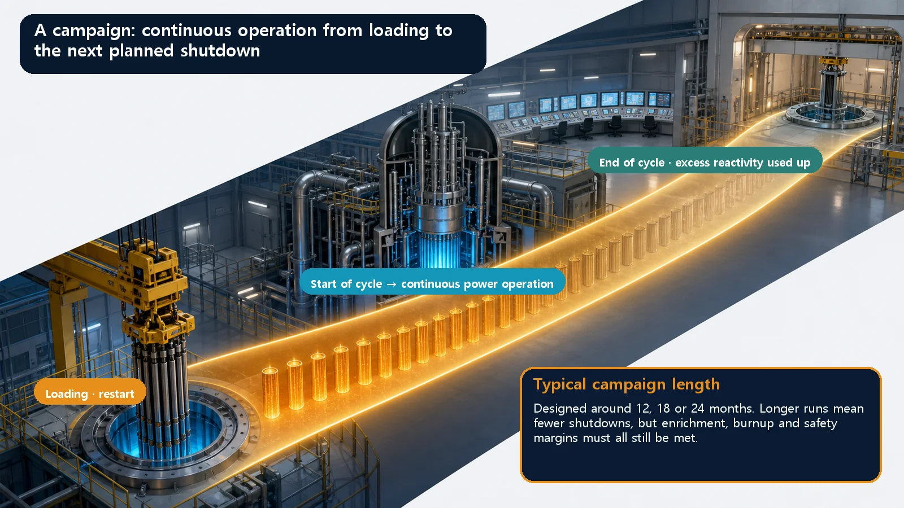

Long-Term Core Behavior & Fuel Cycle · 165
Like Running a Full Load of Laundry — Batch Operation and Campaign (Cycle) Length
Most power reactors load fuel in batches and run one long campaign at a time, and the cycle length is a balance between fewer shutdowns and fuel and safety limits.

Batch operation means loading many fuel assemblies together as one batch and running continuously until the next planned refueling, since no fuel can be added or removed while the reactor runs. The campaign (operating cycle) length, typically designed around 12, 18 or 24 months, balances fewer shutdowns against enrichment, burnup and safety limits.
Think of a washing machine. You fill the drum with a full load, close the door, pick a program and press start. The machine then runs by itself until the program is finished. If you remember halfway through that you forgot a sock and try to open the door, it's locked. Only when the whole load is done does the door open, letting you take the laundry out and put the next load in.
Remarkably, the way most nuclear power plants handle their fuel looks a lot like this washing machine. Today's two terms, batch operation and campaign (cycle) length, are all about this rhythm of "running one load through to the end."
What does "batch" mean here?
Let's start with the word. A batch is a group handled all at once, like a tray of loaves a bakery bakes together, or one load in a washing machine.
A reactor holds many individual fuel assemblies, but instead of swapping them one by one whenever it likes, it loads many of them together as one group (a batch). Then it runs without stopping, just as a washing machine runs one load to the end. This way of operating, "load in batches and run continuously until the next refueling," is called batch operation.
Here's the key point: while it's running, no fuel can be added or removed. During operation, the lid of the thick reactor vessel can't be opened, exactly like the locked washing machine door that won't let you add that one sock. So "when to stop and replace fuel" can't be decided on a whim; it has to be planned from the design stage.

How long does one load run? Campaign length
So how long does this "one load" run? Washing machines have standard and heavy-duty programs with different run times. A reactor likewise has a period of continuous operation from one fuel loading until it stops for the next refueling. This is called the campaign length, or operating cycle. The word "campaign" carries the sense of a military campaign: once it starts, it carries on to the end.
Campaign length is usually designed in round numbers of months, such as 12, 18 or 24 months. Why so long? Because stopping and swapping fuel takes considerable time and money, so running as long as possible on one loading is an advantage.
What happens as a campaign nears its end, at the end of cycle? The surplus reactivity loaded generously at the start is almost used up. As fuel burns, its ability to keep fission going gradually declines, like the suds draining away as a wash program finishes. When that moment comes, it's time to shut the reactor down, open the lid and replace fuel.
Not all of it, just part
Here's an interesting point. Refueling doesn't mean replacing all the fuel in the core with new fuel. Only the most depleted fuel is taken out, and just part of the core at a time (typically about one-third) is filled with fresh fuel. The remaining, still-useful fuel simply changes positions within the core and is used again.
In laundry terms, it's like not washing every item in the house each time, but picking out the dirtiest things to put in fresh and running the less-washed items again with the next load. This way, a core that starts out with all fresh fuel settles, over several cycles, into a stable state with fresh and partly used fuel evenly mixed. As the rhythm of replacing only part each cycle repeats, the core gradually converges to a steady pattern.
Why this is the backbone of plant operation
Now for the "so why does it matter?" question.
To make a campaign longer, you have to load more surplus reactivity at the start. That means raising fuel enrichment, or using more absorbers to hold down that abundant initial reactivity (burnable poisons such as gadolinium, or boron dissolved in the water). The benefit is clear: fewer refueling shutdowns mean less time with the plant offline, and so a higher share of time actually producing electricity (the capacity factor).
But you can't stretch it indefinitely. How far fuel can be burned (burnup) and how high enrichment can go both have upper limits for safety and fuel integrity, and loading too much initial reactivity also increases the burden on the absorbers that must hold it down. So campaign length isn't a case of "longer is always better"; it is a value set by balancing safety, economics and fuel design. Running a wash program forever doesn't make the laundry any cleaner.
In short, batch operation and campaign length are the backbone that sets the big rhythm of operation and design: when a plant stops, how long it runs and how its fuel is replaced. They aren't obscure jargon for specialists but a basic key to understanding why nuclear plants run the way they do.

A few easily confused points
First, campaign length and burnup are easy to treat as the same thing, but they're different. Campaign length is a period, "how long did it run?", while burnup is a cumulative amount, "how much energy has the fuel produced per unit mass?" The two grow together but aren't the same quantity: run gently at lower power and, over the same period, less burnup accumulates.
Second, not every reactor refuels by "stopping and swapping a batch." Some reactor types (notably heavy-water reactors) can replace fuel a little at a time while operating, without shutting down, like hand-washing under running water, continuously swapping in something new. This is called continuous (online) refueling, a different refueling *method* from today's batch operation. Rather than one being better, it's more accurate to see them as different design choices made for different reactor types.
Today's takeaways
- Batch operation means loading many fuel assemblies together as one group (a batch) and running continuously until stopping to refuel, instead of swapping individual pieces at will: like running one washing machine load to the end with the door locked.
- Campaign (operating cycle) length is the period of continuous operation from one loading to the next refueling, typically designed as 12, 18 or 24 months.
- At the end of a cycle the surplus reactivity loaded at the start is nearly used up, so the reactor is shut down and refueled, replacing only part of the fuel (typically about one-third) rather than all of it.
- A longer campaign needs more initial reactivity (more enrichment and absorber burden) in exchange for a higher capacity factor, so campaign length is a design value set by balancing safety, economics and fuel design.
- Campaign length (a period) differs from burnup (cumulative energy), and batch operation (stop and swap a batch) differs from continuous (online) refueling (swap a little during operation).
That's the big rhythm in which a reactor loads fuel once and runs one campaign. But during the months and years that one load is running, far more interesting changes are quietly happening inside the fuel. Next we'll go a little deeper into how the core gradually changes from within over time.